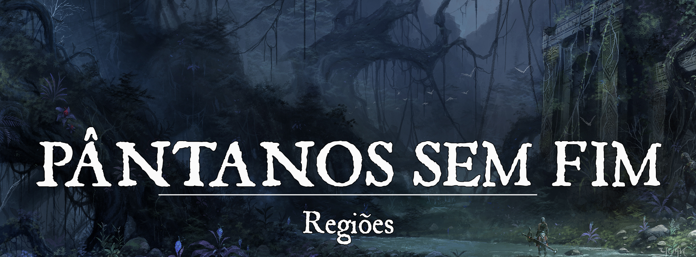

Nefastia
Descrição: Os Pântanos sem Fim, como o nome sugere, é uma grande vastidão de charcos, em sua maioria, formada por pequenos Burgos, Tribos e Aldeias. A região civilizada se chama Nefastia, onde a maior parte da população não selvagem se encontra.
Geografia: Nefastia é a região civilizada dos Pântanos sem Fim. Embora a Macro Região seja chamada de Pântanos, seu ambiente é diversificado, incluindo algumas pequenas áreas de planícies férteis, matas espessas e colinas à beira-mar. Contudo, sim, a maior parte é composta por pântanos.
Origem: Na Era das Trevas:
[left]A região denominada Pântanos sem Fim era um local selvagem, habitado por criaturas bestiais e humanóides mais primitivos, como Grungs e Lizardfolks. A região, por si, era desorganizada e carente de união, visto que a população se subdividia em pequenas tribos, movidas pelos interesses das raças. Inexistia uma coletividade e um pensamento unificado entre as diferentes raças e tribos. Por estarem isolados e afastados do resto do continente, as tribos careciam de maior contato com as demais raças mais desenvolvidas, como os antigos Elfos, embora esses soubessem de sua existência.[/left] Na Primeira Era: Os Pântanos permaneceram praticamente intocados pelas civilizações externas por milênios. Os primeiros olhares apenas se viraram para os pântanos quando uma fenda abissal foi aberta no centro da região, dando passagem para uma enorme marcha demoníaca para o resto do continente. As tribos, que já eram isoladas, se tornam ainda mais distantes para fugir das forças demoníacas, deixando os pântanos à mercê dos corruptores. A fenda para o abismo permaneceu aberta 96 anos e, quando finalmente foi fechada na Batalha do Sangue Negro, os pântanos estavam completamente desolados.
Na Segunda Era (Atual Era): Após a vitória dos Heróis contra as Hordas do Abismo, houve um assentamento no local da Batalha do Sangue Negro, formada por seguidores clericais de Hoffe que se direcionaram para impedir que uma possível nova fenda se formasse no local, além de buscar purificá-lo. Além disso, outras cidades se formaram na região menos pantanosa, através de incentivos de um Alquimista chamado Nicholas Hemlock. Na região pantanosa, as tribos de humanóides bestiais voltaram a sair de seus exílios, mas com o tempo, aparentemente, se tornaram mais escassas.
O Plano de Nicholas Hemlock
fc7fbc371412cd90014af02a91586594.jpg |Nicholas Hemlock
{kind=link}
A falta de poder estruturado na região e a facilidade de se esconder dos olhares do mundo, chamou a atenção de um notório alquimista chamado Nicholas Hemlock, que fundou um pequeno burgo na região norte do pântano.
Hemlock possuía muitos bens e também seguidores ávidos por suas pesquisas, embora fosse um homem sem empatia e fanático pelo seu trabalho. Sua área de estudo era principalmente voltada para o que ele dizia ser: A Vida Eterna. Uma forma artificial de impedir que o corpo envelhecesse e fosse mantida a sanidade da mente, mesmo com o passar dos anos. Hemlock conduzia experimentos em diversas raças com velocidades de envelhecimento diferentes. Sendo um expert nas raças comuns, como Elfos e Anões, passou a estudar as raças exóticas daquele local para entender a composição de seu corpo buscando encontrar indícios de características que pudessem auxiliar na obtenção de suas metas.
Hemlock e seus fanáticos ludibriaram os moradores do pântano a aceitarem acordos com o burgo, ganhando a confiança através da troca de bens e “conhecimento útil” no pântano. Davam a eles “remédios” e outras substâncias alquímicas, que nada mais eram do que drogas que nublavam a mente do Povo do Pântano, facilitando o trabalho de sequestro e experimentos dos alquimistas. Os restos corporais eram guardados para futuros usos. Nicholas, além de Alquimista era um exímio Taxidermista criando verdadeiras obras de horror com o resto do corpo das vítimas de seus experimentos.
Com o tempo, suas buscas e experimentos levaram ao desaparecimento de diversas tribos de raças humanóides bestiais dos pântanos, bem como da própria fauna e flora, causando a fome dele e de seus seguidores. E isto chamou atenção de algo.
images.jpeg |Tutor Diabólico
{kind=link}
Nicholas constantemente era assombrado por sussurros. Sussurros estes que contavam segredos para o Alquimista. De como impedir que ele e os seus morressem de fome. De como fazer a terra ser frutífera até mesmo no pântano. E, principalmente, de como Viver Eternamente.
Hemlock ouvia e estudava o que a Voz lhe contava. Trabalhava sobre as informações e seguia sua pesquisa. Sem o conhecimento de seus seguidores, Hemlock foi desvirtuando os testes e pesquisas para seguir o caminho que lhe era informado.
Havia muita necessidade de sangue. Mas não o líquido rubro, que dava vida à ele e aos seus, mas algo realmente puro. Precisavam da essência de vida mais pura que há, o sangue de uma criatura imaculada: um Anjo.
Através de rituais ensinados pela Voz, conseguiram invocar e aprisionar uma Anja chamada Amaranth. Hemlock e seus sectários a exsanguinaram e, com o sangue prateado celestial, trabalharam na criação de uma potente Mistura utilizando elementos do solo, fauna e flora.
Despejaram-na, então, em um pequeno broto que nascia no pátio e aguardaram o resultado. Resultado este que não demorou a ocorrer. No dia seguinte, no lugar do broto, erguia-se uma grande Árvore de folhas e frutos prateados. Suas raízes se prendiam fortemente no chão, espalhando-se pelo burgo.
download (3).jpeg |Símbolo da Aliança
{kind=link}
Maravilhados pelo sucesso, os alquimistas rapidamente correram para comer de tal fruto. A casca prateada se assemelhava a uma maçã feita totalmente da mais pura, divina energia. Mas era mole e macia. Quando morderam, sentiram o interior borrachoso. Era carne e sangue. Todos cuspiram enojados com o gosto de sangue e carne crua. Todos, exceto Nicholas, que desfrutava da refeição.
Os alquimistas protestaram contra Nicholas, mas o mesmo não parecia ouvir seus brados intimidadores. Buscava apenas se saciar daquele fruto proibido. E, com isso, os sussurros em sua cabeça aumentavam.
“Fracos, de pouca vontade. Não precisa deles. Não precisa de nenhum deles. O atrasarão. O fruto é apenas seu. Apenas nosso.”
Nicholas sentia em suas veias o pulsar do sangue que comera. Era uma sensação indescritível. Uma sensação de poder. De vida. De Vida Eterna. Então tudo ficou escuro.
Nicholas acorda tempos após em seus aposentos. Uma dor indescritível em seu estufado estômago que o fazia encolher-se em posição fetal, incapaz de agir.
“Está feito, Nicholas Hemlock. Você conseguiu…” Ouvia a voz em sua cabeça. Clamando para que a dor parasse, não mais ouviu resposta. E então, novamente desmaiou.
Os dias se passaram e Nicholas foi descobrindo aos poucos o preço do sucesso.
Não havia mais ninguém no Burgo que formara. Apenas ele e a Árvore de Frutos Prateados, que estava mais radiante do que quando a plantara. Suas raízes saíam do Burgo e se entremeiavam pela terra, a irrigando e tornando fértil. Não mais se via num pântano morto e fétido, mas sim em uma planície. E a árvore continuava a se expandir.
Havia, contudo, marcas de resistência. Uma luta, ou melhor, uma chacina foi cometida no burgo. Sempre que tentava se recordar do acontecido, sua cabeça e sua barriga praticamente o faziam desmaiar novamente da dor lancinante que o arremetia.
Hemlock, depois de seu estômago digerir o que quer que tivesse dentro dele, sentiu fome. Fome de carne. De sangue. Fome daquele fruto prateado, divino. E o comeu, se saciando. Percebeu, contudo, que frutos novos não nasciam e isso lançou um desespero sobre ele. Talvez precisasse de outro Anjo? Sozinho não conseguiria. Mais gente? Mais Sangue? Isso… mais sangue! De diversas raças! De diversos povos! Nicholas tinha sede de Sangue.
985515f6c44acb47f1e0b04cfbf13a29.jpg |Transformação Macabra
{kind=link}
A Voz não precisava mais sussurrar em seu ouvido. A influência já havia sido consolidada. Durante dias e dias, Hemlock consumia os frutos da Árvore, enquanto escrevia cartas para seus correspondentes no continente. Tamanha era a voracidade de Nicholas, que por diversas vezes, sucos do Fruto caíam no papel e ele sequer se importava, enviando-os da mesma maneira. Dizia ter encontrado uma terra fértil e propícia à vida. Cheia de riquezas e matérias de estudo alquímicos. Convocava expedições para que viessem e se assentassem no local. Prometia fundos e auxílio a quem quisesse povoar a área, a qual deu o nome de Nefastia.
Com o tempo, o povo veio. De diversos locais. Com diversas vontades. Formaram três cidades, inicialmente: Tangerwald, Krahë, e Hoffenstein.
Hemlock os observava de seu burgo distante, com a sede e os poderes que o Fruto havia dado a ele. Ansiava por curiosos que tentassem adentrar seu perímetro. Tornou-se muito mais do que apenas indiferente. Nicholas se tornou cruel. Sádico. Gostava de enfeitiçar pessoas e simplesmente as devorar sugando seu sangue, deixando para trás apenas uma casca vazia e seca, que ele trazia para seus domínios para enfeitar suas pilastras e paredes, fundindo-as às mesmas. À medida que o tempo passava, as cascas recebiam uma ligeira fagulha de vida, apenas para se desesperar ao ver seu tormento de estar presa pela eternidade.
images (1).jpeg |Declaração em Pedra
{kind=link}
O mito do Demônio de Nefastia se espalhava com rapidez e houve medo. A população evitava sair à noite e muitas vigílias eram feitas para impedir que a Besta consumisse o povo.
Com as décadas, a presença do ser das Trevas era, curiosamente, cada vez menos notada. Alguns diziam que era consequência da formação da nova Hoffenstein e seus Cátaros e Clérigos. Outros diziam que ele se esconde em seus domínios, pois o sangue do povo não tem mais sabor para o Monstro. Seja qual for a verdade, um fato é: Quem se aventura pelo popularmente denominado “Fim da Esperança”, os domínios do Demônio de Nefastia, não volta para contar o que descobriu.
Conflito:
As regiões mais selvagens e mais pantanosas guardam criaturas que sofreram mutações graças aos resquícios abissais da fenda. Da mesma maneira, os povos bestiais não são amigáveis com estrangeiros e nem mesmo membros de outras tribos. Sem contar a dificuldade de translado e sobrevivência natural do próprio Pântano. As regiões de Nefastia como um todo são assoladas por Geists (Fantasmas) que muitos dizem ser oriundos do sofrimento causado pelos Demônios. Tangerwald tem problemas constantes com Licantropos, que circundam as matas da região e assolam as fazendas. Krahë é a mais castigada pela presença de Geists (Fantasmas), principalmente os vindos do Mar, oriundos da Nebelgast. Krahë também é conhecida pela sua Necro-Alquimia, crimes e mistérios. Hoffenstein tem um posto avançado dentro de Krahë, com o dever de suprimir a Necro-Alquimia, que consideram profana. Contudo, no coração de todo humanóide, existe a possibilidade de corrupção. Muitos cátaros fazem vista grossa em troca de dinheiro e favores.
Acontecimentos
Nebelgast - O Sopro dos Incansáveis
stf165_sturmgeist.jpg |Nebelgast
{kind=link}
Há anos os Pântanos sem Fim são encobertos periodicamente por uma espessa névoa salgada advinda do mar. O motivo é desconhecido, mas sua presença é mais forte durante as Luas Cheias. A névoa assola a região e, desde sua primeira aparição, os mortos não mais conseguem manter-se em seus túmulos por muito tempo. Os espíritos dos que se foram constantemente erguem-se e caminham em sua forma etérea, pelas terras de Nephastia. Cada Geist (Espírito) é único e depende somente da pessoa morta. Os espíritos podem se manifestar como protetores, no caso de Cátaros ou Clérigos de Hoffenstein. Da mesma forma que podem se manifestar como inquietos espíritos obsessores, caso pertença a alguma criatura de má índole ou cuja morte tenha sido traumática. Os Geists de Krahë são especialmente perigosos, pois muitas mentes “brilhantes” morreram no local, então eles geralmente se manifestam na forma de princípios da mente, repetindo coisas constantemente, sussurrando em ouvidos desatentos, sugerindo idéias excêntricas nos melhores dos casos. São geralmente espíritos obcecados com algum tipo de trabalho ou atividade que faziam em vida.
A possessão dos Geists de Krahë é especialmente perigosa pois, mesmo se revertida, pode deixar sequelas nas mentes do possuídos, como distúrbios mentais e até mesmo doenças que fazem o indivíduo repetir constantemente ações, como demência, epilepsia, esquizofrenia.
Único local onde a névoa não entra e os mortos não são atormentados por ela é em Solo Sagrado, mais notadamente, Hoffenstein.